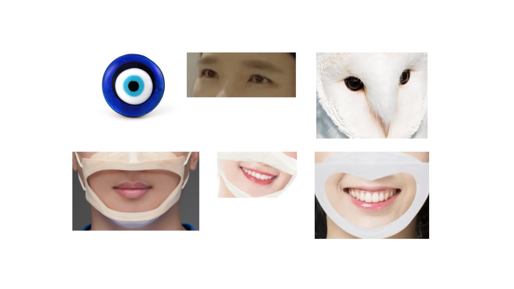

Activity
Helping Myself Not to Be Deceived (feat. Ibul-kick)

Program introduction
This activity is an exercise in preparing ourselves to respond differently when we encounter similar situations from our past again in the future.
Before the activity, I will collect examples of situations or moments from the past that participants may encounter again. We will also gather new examples together during the workshop.
Participants will speak what they like themselves and speak in a dark (for confidence to tell), participants offering words, gestures, or simply their presence and gaze as forms of support for one another. They will also explore how much can be communicated without words—through eye contact, facial expressions, and subtle changes in their gaze.
Through this exercise, participants practice imagining a past situation happening again and exploring how they might respond, support themselves, and support others differently next time.
Practice ways of finding inner strength in situations we regret or moments when we need to stay strong.
Through practices such as speaking with our voice and speaking with our eyes, we explore different ways of expressing ourselves and communicating with others.
Helping myself is not simply about looking inward. It is a process of recognizing where I stand, connecting with the stories of others, and transforming those connections into my own thoughts and actions.
Activity flow
Activity flow
Before the workshop
Collect examples of situations or experiences that participants may want to explore.
During the workshop
Participants share situations they would like to talk about and practice, and these are collected together.
With the lights off
Participants express the situations verbally and anonymously.
Expressions of support
Participants offer supportive responses to one another through a stethoscope, language, gestures, and eye contact.
With the lights on
Participants revisit the situations and try to express their responses using only their eyes and gaze.
Closing
A brief performative action.